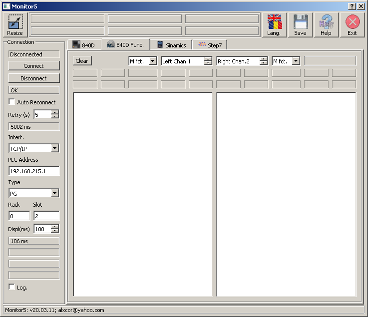
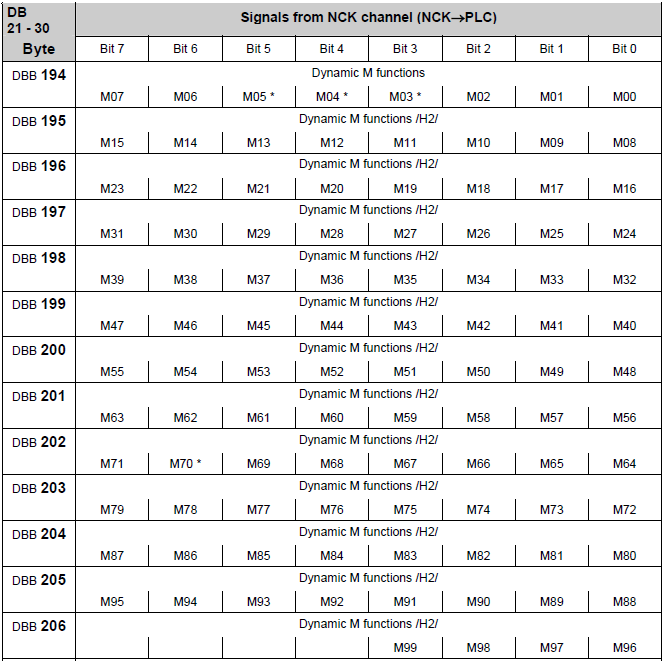
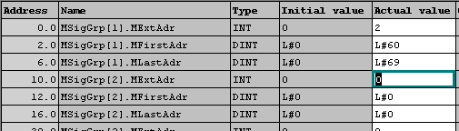
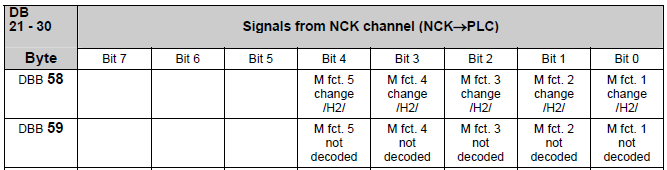
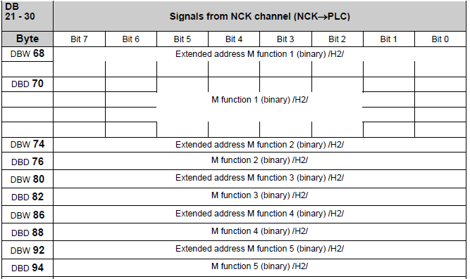

20.03.20; Mar.2020
Monitor 5
help
Aria '840D Func'

Monitorizare Functii NC (NC catre PLC):
- monitorizeaza si inregistreaza toate functiile M (Miscellaneous), S (Turatii arbori / Spindle Speed), T (Scule / Tool), D (taisuri pentru o scula / cutting edges for a tool) sau H (ca valori Intregi sau Reale), functii programate intr-un program piesa si transmise catre PLC.
Sunt disponibile doua ferestre de monitorizare astfel incat este posibila monitorizarea simultana a doua tipuri de functii (de ex. functii T si D) din acelasi Canal sau din Canale diferite ale NC.
Functii M (NC catre PLC):
Functiile M sunt comenzi scrise in cod G, in programul piesa, dar executate de catre PLC.
Exemplu: Pornirea racirii sculei aflate in arbore: comanda este scrisa in programul piesa (de exemplu M07) dar electro-ventilul ce controleaza curgerea lichidului de racire este comandat din iesirile PLC.
Using M functions is the most common way to transfer binary commands from NC to PLC.
Decodificarea functiilor M in PLC:
La Sinumerik 840 sunt disponibile 3 metode de decodificare a functiilor M in PLC.
1. Decodificare directa (Functii M rapide - Quick M functions)
Cea mai simpla metode de decodificare a functiilor M este utilizarea semnalelor decodificate direct din blocul DB 'Channel DB' din PLC.
Fiecare bit este setat pentru un singur ciclu PLC.
Sunt decodificare doar primele 99 de functii.
Indexul functiei M nu este decodificat (se ignora).
In tab-ul 'Aria 840' din programul Monitor5 puteti gasi un mic calculator pentru bit si o functie de monitorizare online a starii acestuia.

2. Decodificare utilizand o Lista de Functii (DB75, DB76)
O alta metode de decodificare a functiilor M in PLC o reprezinta utilizarea unei Liste de Functii.
Metoda a fost foarte populara in anii '90 dar este rar utilizata acum.
Conditie preliminara:
Trebuie sa fie activata in OB100, in apelul functiei FB1, DB7:
CALL FB 1, DB7
...
ListMDecGrp := ___ //numarul de grupuri de functii de decodificat, max. 16 grupuri
...
Sfat pentru service: Daca in OB100, in apelul functiei FB1 gasiti ListMDecGrp > 0 si blocurile DB75 si DB76 sunt prezente in PLC, pe masina este utilizata aceasta metoda de decodificare a functiilor M.
DB75 este creat utilizand un sablon / template din Sinumerik Toolbox.
Structura este:
MSigGrp[1].MExtAdr INT //Extensia functiilor M pentru Grupul 1
MSigGrp[1].MFirstAdr DINT //numărul primei funcții M pentru Grupul 1
MSigGrp[1].MLastAdr DINT //numărul ultimei funcții M pentru Grupul 1
...
MSigGrp[n].MExtAdr INT //extensia functiei M pentru Grupul n
MSigGrp[n].MFirstAdr DINT //numărul primei funcții M pentru Grupul n
MSigGrp[n].MLastAdr DINT //numărul ultimei funcții M pentru Grupul n
Exemplu:

In DB76 bitii vor avea urmatoarea semnificatie:
DBX0.0 M2 = 60
DBX0.1 M2 = 61
....
DBX0.7 M2 = 67
DBX1.0 M2 = 68
DBX1.1 M2 = 69
Bitii din DB76 raman setati. Valoarile lor trebuie sa fie resetate din programul PLC scris de utilizator.
3. Scanare modificari ale valorilor
O alta metoda (probabil cea mai folosita) de decodificare a valorilor functiilor M din PLC o reprezinta scanarea 'modificarii' starii functiilor.
Aceasta metoda e utilizata si de programul Monitor5.
Intr-un bloc NC pot fi apelate maximum 5 functii M.
De fiecare data cand in NC este rulat un bloc - o fraza de program piesa - in care sunt apelate functii M, in PLC, in blocul DB specific respectivului canal (Channel DB) sunt setati urmatorii biti, pentru un singur ciclu PLC.

...iar valorile functiilor M sunt scrise in:

'Monitor5' scaneaza starea bitilor in DB2n.DBX 58.0 ... 58.4
Daca DB2n.DBX58.0 = 1 => citeste numarul functiei M din DBD70 si extensia functiei M din DBW68
Daca DB2n.DBX58.1 = 1 => citeste numarul functiei M din DBD76 si extensia functiei M din DBW74
Daca DB2n.DBX58.2 = 1 => citeste numarul functiei M din DBD82 si extensia functiei M din DBW80
Daca DB2n.DBX58.3 = 1 => citeste numarul functiei M din DBD88 si extensia functiei M din DBW86
Daca DB2n.DBX58.4 = 1 => citeste numarul functiei M din DBD94 si extensia functiei M din DBW92